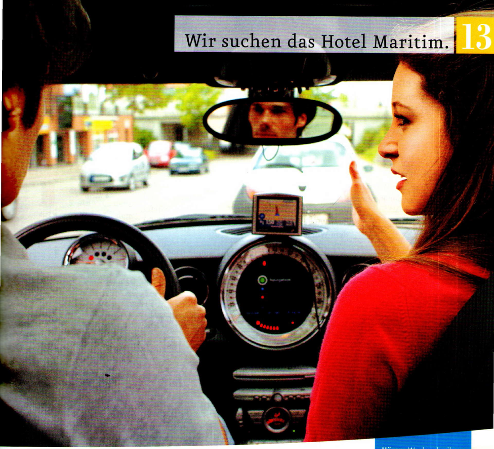
aSehen Sie das Foto an, hören Sie und kreuzen Sie an. Was ist richtig?
bHören Sie noch einmal. Wer sagt das? Die Frau (F), der Navigator (N) oder keiner (k)?
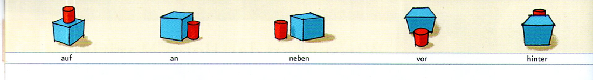
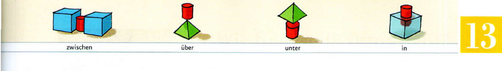
Sehen Sie das Bildlexikon an und ergänzen Sie.
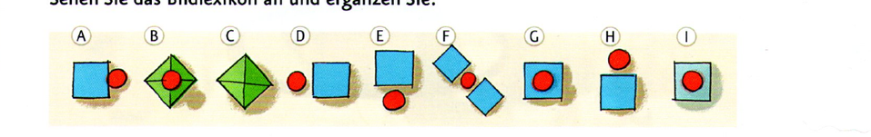
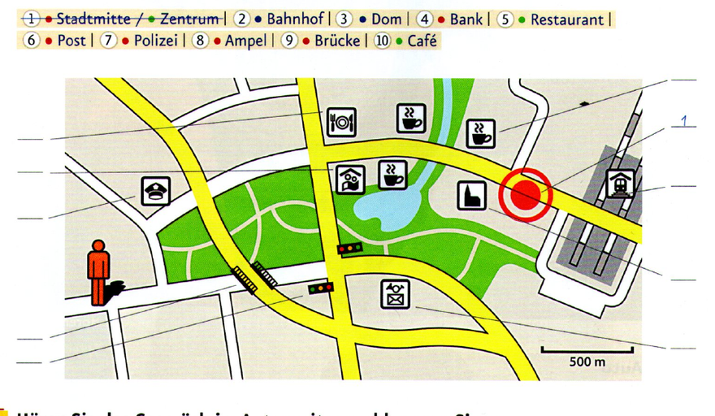
| helfen | |
|---|---|
| ich helfe | du hilfst |
| er/sie hilft | |
aHören Sie das Gespräch weiter. Tragen Sie den Weg und das Hotel in den Plan in 3 ein.
bHören Sie noch einmal und kreuzen Sie an.
cLesen Sie die Sätze in b noch einmal und ergänzen Sie.
| nach dem Weg fragen | sich bedanken | den Weg beschreiben | den Weg nicht kennen |
|---|---|---|---|
| Entschuldigung! … |
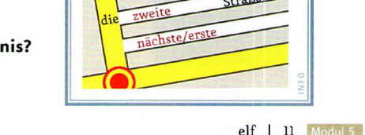
aWelche Sätze sind höflich? Hören Sie und kreuzen Sie an.
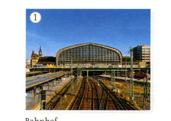
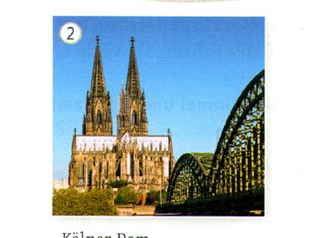
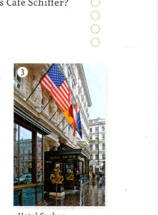
| definiter Artikel | indefiniter Artikel | ||
|---|---|---|---|
| Da ist … Wo ist das Hotel? Es ist … | ● der/ein Dom | neben dem Dom. | neben einem Dom. |
| ● das/ein Café | neben dem Café. | neben einem Café. | |
| ● die/eine Post | neben der Post. | neben einer Post. | |
| Da sind … | ● die/– Banken/Häuser | neben den Banken/Häusern. | neben – Banken/Häusern. |
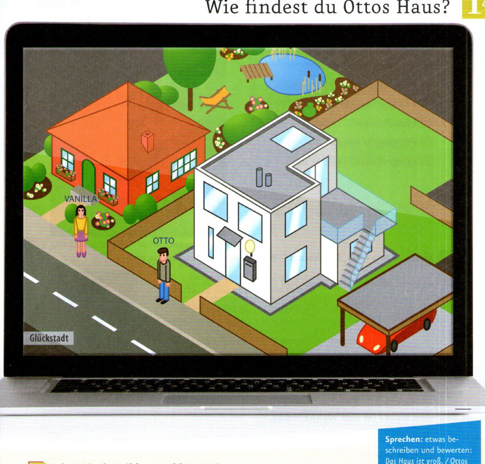
Kennen Sie Computerspiele wie „Glückstadt“? Spielen Sie gern Computerspiele? Welche?
Kreuzen Sie an. Hilfe finden Sie im Bildlexikon.
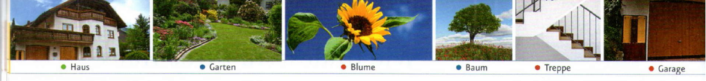
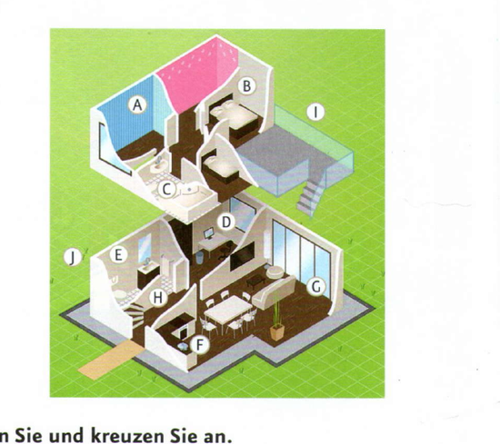
aHören Sie noch einmal und ergänzen Sie sein, seine oder seinen.
bErgänzen Sie.
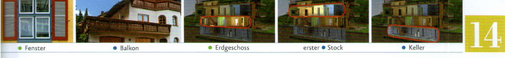
aWie finden Sie Ottos Haus? Sprechen Sie.
bUnd wie finden Sie Vanillas Haus?
| Nominativ | Akkusativ |
|---|---|
| ● ihr Balkon | ihren |
| ● ihr Haus | ihr |
| ● ihre Garage | ihre |
| ● ihre Blumen | ihre |
aÜberfliegen Sie die Anzeigen und notieren Sie: ① Wer sucht eine Wohnung / ein Haus? ② Wer bietet eine Wohnung / ein Haus an?
Glückstadt/Stadtmitte. Schöne 2-Zimmer-Wohnung (54 m²) im 3. Stock (Aufzug!) mit Küche, Bad und Balkon. Eigener Stellplatz in der Tiefgarage. 400 € plus 120,00 € Nebenkosten. Sofort frei. braun@ab-immo.com
Polizistin sucht dringend 1½- bis 2-Zimmer-Wohnung in Glückstadt/Stadtmitte oder Nord, ca. 40 bis 50 m² (nicht über 500 € inkl.). Gern auch möbliert. Kontakt: gittiweiss@polizei-glückstadt.org
Blumenstraße 12. Nettes kleines Haus, 120 m², 4 Zi., Küche, 2 Bäder. Schöner großer Garten (700 m²!). Miete 880 € plus NK (200 €). Kontakt: vanilla@btx.net
Glückstadt-Süd. Apartment, 32 m², im EG. Wohn- und Schlafraum plus Küche (mit Kühlschrank und Herd). Monatsmiete: 320 € inkl. NK. braun@ab-immo.com
Super! Wohnen wie auf dem Land und doch mitten in der Stadt: WGM – Wohnpark Glückstadt Mitte. Nur noch 11 Wohnungen frei. 30 bis 70 m² / Warmmiete 360 bis 880 €/Monat. Ihr Vermieter: Glückstadtbau AG. Tel. 34758
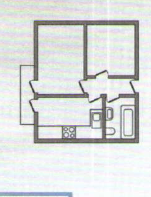
bLesen Sie die Anzeigen noch einmal. Was passt zusammen? Markieren Sie die Wörter in den Anzeigen und ordnen Sie zu.
Sie sind gerade umgezogen und schreiben eine E-Mail an eine Freundin / einen Freund.
aWie ist Ihre neue Wohnung? Ergänzen Sie. bIn welcher Reihenfolge wollen Sie die Punkte aus a erwähnen? Sortieren Sie.
| positiv? | negativ? | |
|---|---|---|
| Größe? | ||
| das Bad | kein Fenster | |
| die Küche | sehr groß |
cWählen Sie eine Anrede, passende Sätze und eine Grußformel und schreiben Sie die E-Mail.
| Ottos Nachbarin = | die Nachbarin von Otto |
| Vanillas Garten | der Garten von Vanilla |
| sein | ihr | |||
|---|---|---|---|---|
| Da ist … | ● Garten | sein | ihr | seinen · ihren sein · ihr seine · ihre |
| ● Haus | sein | ihr | ||
| ● Küche | seine | ihre | ||
| Da sind … | ● Kinder | seine | ihre |
aWas sehen Sie auf den Bildern? Hilfe finden Sie im Bildlexikon.
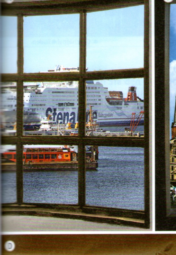
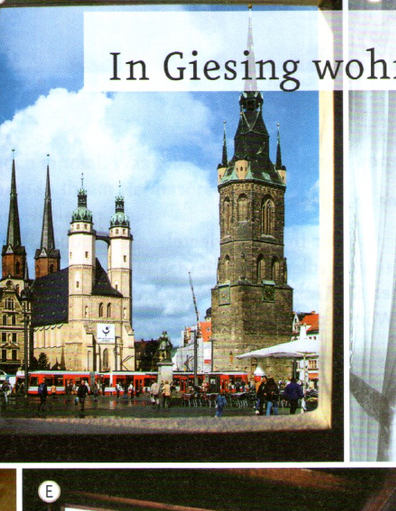
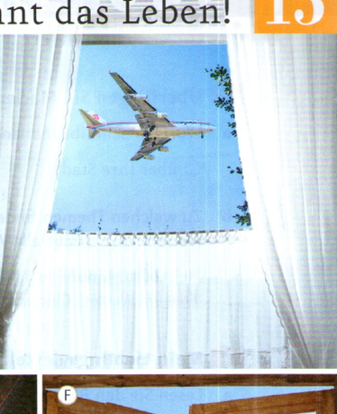
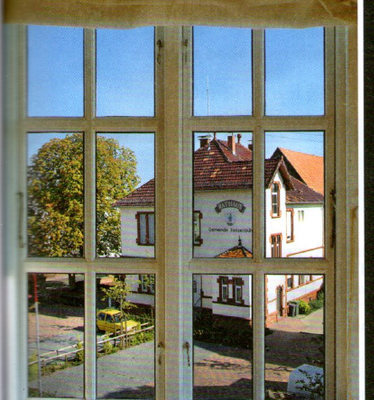
bWas passt? Hören Sie und ordnen Sie zu.
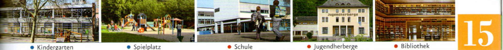
aWorüber schreibt Marlene? Kreuzen Sie an.
bZu welchen Themen finden Sie Links? Notieren Sie. Nicht alle Wörter passen!
aLesen Sie den Blog und die Kommentare noch einmal. Was ist richtig? Kreuzen Sie an.
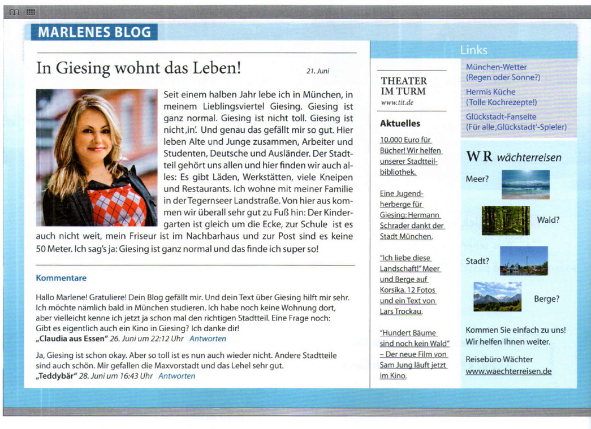
Seit einem halben Jahr lebe ich in München, in meinem Lieblingsviertel Giesing. Giesing ist ganz normal. Giesing ist nicht toll. Giesing ist nicht „in“. Und genau das gefällt mir so gut. Hier leben Alte und Junge zusammen, Arbeiter und Studenten, Deutsche und Ausländer. Der Stadtteil gehört uns allen und hier finden wir auch alles: Es gibt Läden, Werkstätten, viele Kneipen und Restaurants. Ich wohne mit meiner Familie in der Tegernseer Landstraße. Von hier aus kommen wir überall sehr gut zu Fuß hin: Der Kindergarten ist gleich um die Ecke, zur Schule ist es auch nicht weit, mein Friseur ist im Nachbarhaus und zur Post sind es keine 50 Meter. Ich sag‘ ja: Giesing ist ganz normal und das finde ich super so!
Hallo Marlene! Gratuliere! Dein Blog gefällt mir. Und dein Text über Giesing hilft mir sehr. Ich möchte nämlich bald in München studieren. Ich habe noch keine Wohnung dort, aber vielleicht kenne ich jetzt ja schon mal den richtigen Stadtteil. Eine Frage noch: Gibt es eigentlich auch ein Kino in Giesing? Ich danke dir!
„Claudia aus Essen“, 26. Juni um 22:12 Uhr · Antworten
Ja, Giesing ist schon okay. Aber so toll ist es nun auch wieder nicht. Andere Stadtteile sind auch schön. Mir gefallen die Maxvorstadt und das Lehel sehr gut.
„Teddybär“, 28. Juni um 16:43 Uhr · Antworten
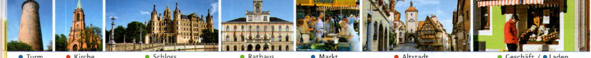
bLesen Sie den Blog noch einmal. Was gibt es in Giesing? Was davon gibt es auch in Ihrem Heimatort / in Ihrem Stadtviertel? Notieren Sie.
cWas meinen Sie? Kreuzen Sie an oder schreiben Sie selbst etwas. Vergleichen Sie dann mit Ihrer Partnerin / Ihrem Partner.
| Marlene | ||
|---|---|---|
| 1 | kauft gern ein. | findet Einkaufen nicht so wichtig. |
| 2 | liebt die Ruhe auf dem Land. | lebt gern in der Stadt. |
| 3 | ist gern allein. | ist gern unter Menschen. |
| 4 | hat Kinder. | hat keine Kinder. |
aWas bedeuten die markierten Wörter aus dem Blog? Ordnen Sie zu.
bWelche Personalpronomen stehen bei den markierten Wörtern? Ergänzen Sie.
Original Seite 73 öffnen ↗ · Original Seite 77 öffnen ↗
Arbeiten Sie zu zweit. Lesen Sie den Blog noch einmal und suchen Sie Wörter zu den beiden Themen.
Machen Sie Notizen und erzählen Sie dann im Kurs.
aWas möchten Sie von den anderen wissen? Machen Sie einen Fragebogen und tauschen Sie ihn mit einer anderen Person.
bBeantworten Sie die Fragen und notieren Sie Ihren Namen auf dem Fragebogen. Mischen Sie dann alle Fragebögen.
cZiehen Sie einen Fragebogen und erzählen Sie. Die anderen raten: Von wem sind die Antworten?
| ich | → mir |
| du | → dir |
| er/es | → ihm |
| sie | → ihr |
| wir | → uns |
| ihr | → euch |
| sie/Sie | → ihnen/Ihnen |
| Das | gefällt | mir. |
| Das | gehört | dir. |
| Das | hilft | ihm. |
| Ich | danke | dir. |
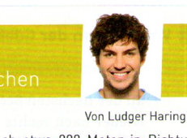
Von Ludger Haring
Der Englische Garten in München ist mehr als 200 Jahre alt und er ist seit 1792 für alle Menschen geöffnet. Wir finden das heute ganz normal, aber im 18. Jahrhundert war es noch etwas Besonderes. So viel „Volksnähe“ war in den meisten Ländern Europas nämlich noch nicht üblich.
Englischer „Garten“? Gärten sind ja meist ziemlich klein. Wir sprechen hier aber von einem Park mit mehr als vier Quadratkilometern Fläche. Und dieser Park liegt auch noch mitten in der Großstadt. Vom Stadtzentrum am Marienplatz sind es nur etwa 800 Meter und schon ist man im Grünen.
Ich möchte meinen Spaziergang aber woanders starten und fahre vom Marienplatz zuerst mal vier Stationen bis zur Haltestelle Münchner Freiheit. Von dort gehe ich dann in etwa zehn Minuten zu Fuß zum Kleinhesseloher See. Der Biergarten am Seehaus ist sehr schön, aber für eine Pause ist es noch ein bisschen zu früh. Also weiter.
Nach einem Kilometer komme ich zum Chinesischen Turm. Den finde ich besonders toll. Er ist 25 Meter hoch und ganz aus Holz. Auch hier gibt es einen Biergarten. Er hat 7.000 Sitzplätze und ist bei Einheimischen und Touristen sehr beliebt. Manchmal spielt im Turm eine bayrische Blasmusik für die Gäste.
Noch einmal 300 Meter weiter kommen wir zu meinem Lieblingsplatz: zum Monopteros. Das ist ein griechischer Tempel auf einem Hügel. Von dort oben hat man einen super Blick auf die Frauenkirche und das Zentrum.
Jetzt gehen wir noch etwa 800 Meter in Richtung Stadtmitte und kommen zum Japanischen Teehaus. Seit 1972 haben München und das japanische Sapporo eine Städtepartnerschaft. Das Teehaus ist ein Zeichen für die Freundschaft der beiden Olympiastädte.
So, mein Spaziergang ist zu Ende. Wir haben noch nicht einmal 30 Prozent vom Englischen Garten gesehen. Aber sicher verstehen Sie schon jetzt: Er ist mein Lieblingspark in München.
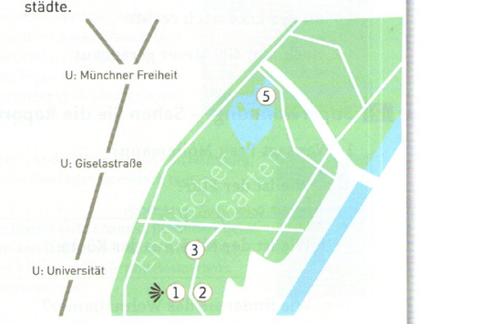
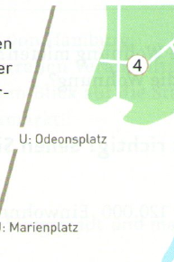
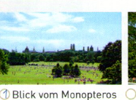
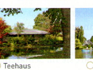
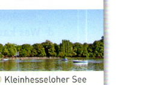
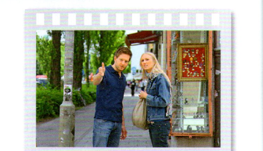
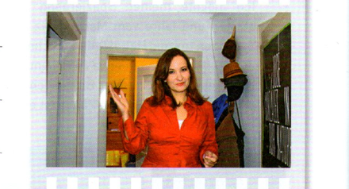
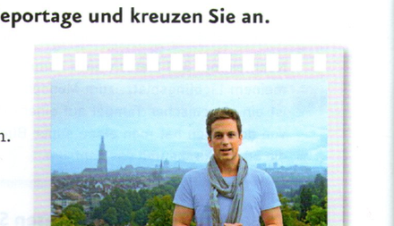
Meine Lieblingsstadt ist Hamburg. Ich bin oft dort und besuche Freunde. Die Stadt hat 1,8 Millionen Einwohner und liegt in Norddeutschland an der Elbe. In Hamburg gibt es alles: Kunst und Kultur, Restaurants und Bars, Läden und Geschäfte – und viel Wasser.
Ihr wollt Hamburg besuchen? Das müsst ihr sehen:
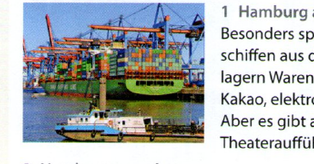
1 Hamburg am Wasser
Besonders spannend sind der Hafen mit den Containerschiffen aus der ganzen Welt und die Speicherstadt. Dort lagern Waren von den Schiffen: Kaffee, Tee, Gewürze, Kakao, elektronische Produkte, Teppiche und vieles mehr. Aber es gibt auch Museen, Ausstellungen, Lesungen und Theateraufführungen.
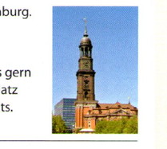
2 Hamburg von oben
Die Kirche St. Michaelis (die Hamburger nennen sie „Michel“) ist das Wahrzeichen von Hamburg. Der Blick vom Kirchturm (132 Meter hoch!) auf die Stadt und den Hafen ist einfach toll!
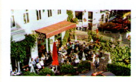
3 Hamburg am Abend
Natürlich gibt es in Hamburg überall viele Kneipen. Besonders gern mag ich aber die Atmosphäre am Großneumarkt, das ist ein Platz in der Hamburger Neustadt mit Kneipen, Cafés und Restaurants. Vielleicht sehen wir uns irgendwann mal?
Ewa aus Krakau: Danke für die Tipps, Jan! Dein Blog gefällt mir gut. Hamburg kenne ich noch nicht, aber jetzt möchte ich unbedingt hin und den Hafen sehen. Antworten
aArbeiten Sie zu zweit: Wählen Sie Ihre Lieblingsstadt und machen Sie Notizen zu den Fragen: 1 Wo ist die Stadt und wie groß ist sie? 2 Wie oft sind/waren Sie dort? 3 Welche drei Sehenswürdigkeiten/Plätze/… gefallen Ihnen besonders gut?
bSchreiben Sie einen Blog wie in 1. Suchen Sie auch passende Fotos im Internet.
cLesen Sie die Blogs der anderen Kursteilnehmer und schreiben Sie einen Kommentar dazu.
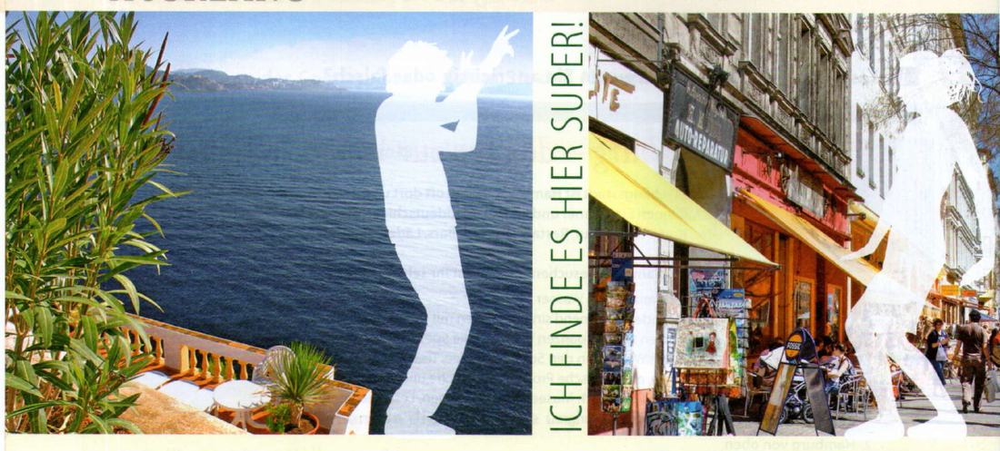
1 Ich finde es hier super. Der Ort ist sehr schön.
Wir haben ein Zimmer mit Blick aufs Meer.
Das Essen ist gut. Die Leute sind nett.
Ich liebe diese Landschaft. Hier gefällt es mir sehr.
„Und wie findest du es hier? Ist es nicht toll, hm?
– Nein, es gefällt mir nicht.
Komm jetzt, ich möchte gehen.
– Was? Es gefällt dir nicht?
Ich kann das nicht verstehen.“
2 Ich liebe die Geschäfte in der Friedrichstraße.
Ruf‘ uns mal ein Taxi! Da fahren wir jetzt hin.
Ich glaube, ein Friseur ist da auch gleich um die Ecke.
Ach, mein Schatz, ich finde es so super in Berlin.
„Und du, Schnucki? Findest du es auch so schön hier?
– Die Stadt gefällt mir nicht.
Ich möchte sie nicht sehen.
– Berlin gefällt dir nicht?
Ich kann das nicht verstehen.“
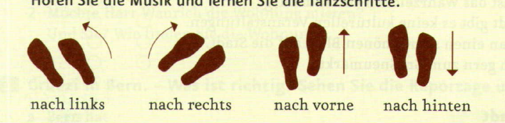
aEntscheiden Sie: Wer von Ihnen ist lieber am Meer (Strophe 1)? Wer lieber in der Stadt (Strophe 2)?
bLesen Sie den Liedtext zu zweit laut vor. Betonen Sie dabei, was Ihnen gefällt und was nicht.
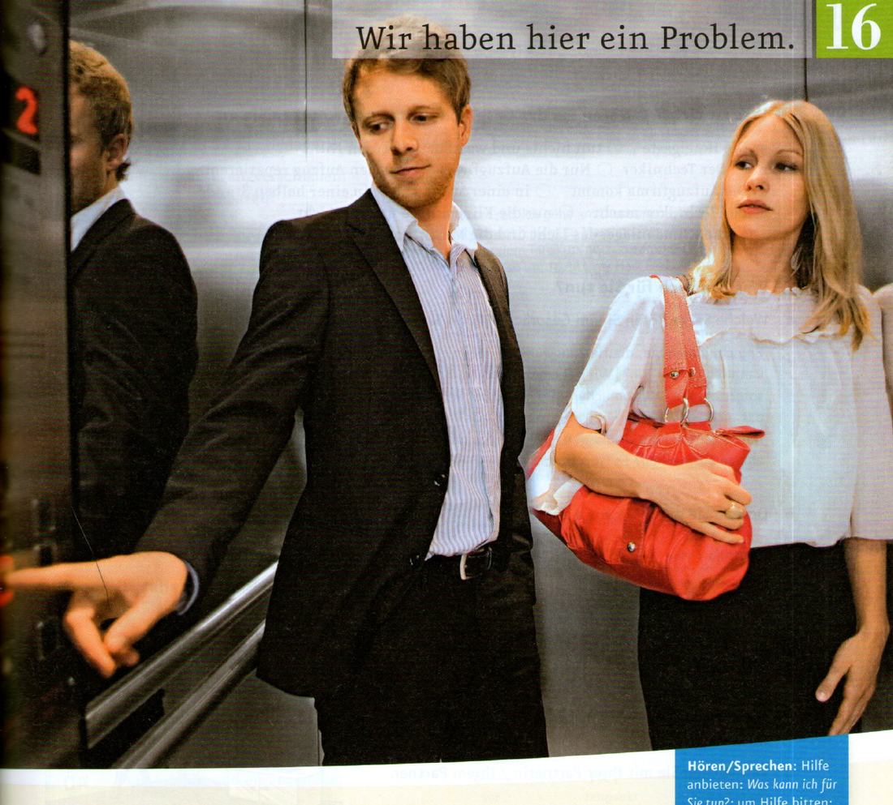
aSehen Sie das Foto an und hören Sie. Wer sind die Personen? Wo sind sie? Was ist das Problem? Erzählen Sie.
bMit wem möchten Sie im Aufzug stecken bleiben? Warum? „Mit George Clooney / … Der/Die … – den/die möchte ich gern kennenlernen. …“
cWie geht die Geschichte jetzt weiter? Was meinen Sie?
| a Was machen die beiden jetzt? | Sie warten. | Sie rufen Hilfe. |
| b Wie geht es den Personen? | Sie sind genervt. | Sie haben Angst. |
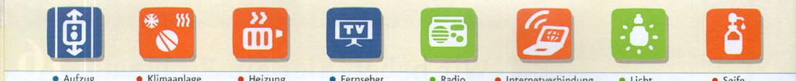
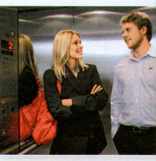
aWelche Sätze hören Sie im Gespräch? Hören Sie noch einmal und markieren Sie.
bOrdnen Sie die Sätze aus a zu.
| um Hilfe bitten | Hilfe anbieten / auf Bitten reagieren |
|---|---|
| Entschuldigen Sie, die Heizung funktioniert nicht. Können … | Ich kann das nicht selbst reparieren. Tut mir leid, das kann wohl nur die … |
aMachen Sie eine Liste mit fünf Dingen. Hilfe finden Sie im Bildlexikon. bVergleichen Sie mit Ihrer Partnerin / Ihrem Partner.
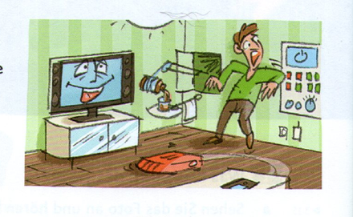
| Ich | Meine Partnerin / Mein Partner |
|---|---|
| 1 Telefon 2 Fernseher 3 … 4 … 5 … | Klimaanlage … |
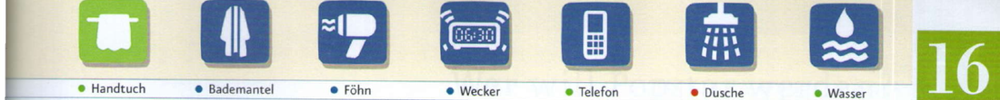
aÜberfliegen Sie die E-Mails. Was ist das Thema?
Hallo Martin,
leider kann ich heute Abend doch nicht kommen. Ich hatte Probleme mit dem Internet. Ich habe also leider heute noch gar nicht gearbeitet. Das muss ich nun heute Abend machen. Können wir den Termin verschieben? Von Mittwoch bis Freitag bin ich auf Geschäftsreise und ab Montag bin ich für eine Woche im Urlaub. Passt es Dir am Wochenende?
Liebe Grüße Julia
Lieber Fred, ich gehe am Dienstag nach der Uni doch nicht zu Massimo. Wir können also vor dem Tanzkurs noch zusammen essen. Vielleicht so um 18.30 Uhr? Hast Du Lust?
LG Petra
Sehr geehrte Frau Wegele,
ich stecke im Aufzug fest und schaffe es nicht pünktlich zur Sitzung. In einer halben Stunde kommt der Techniker. Ich kann wahrscheinlich erst um 16.30 Uhr bei Herrn Feldmann sein. Sagen Sie ihm bitte Bescheid?
Mit freundlichen Grüßen
Gina Wallner
bLesen Sie die E-Mails noch einmal und korrigieren Sie die Sätze.
cMarkieren Sie für, nach, vor und in in den E-Mails und ergänzen Sie.
aSchreiben Sie drei Entschuldigungen.
bAuf Entschuldigungen reagieren. Was passt? Ordnen Sie zu.
cArbeiten Sie zu viert. Wer bekommt die meisten Punkte? Sie kommen zu spät und entschuldigen sich. Die anderen reagieren: sehr gut (3 Punkte), okay (2 Punkte) oder nicht gut (0 Punkte)?
| vor, nach, in + Dativ · Wann? | |
|---|---|
| ○ vor/nach/in | einem Monat · einem Jahr · einer Stunde · zwei Wochen |
| für + Akkusativ · (Für) Wie lange? | |
|---|---|
| ○ für | einen Tag · ein Jahr · eine Woche · zwei Wochen |